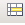
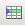

Formatar taules
El text de les cel·les pot formatar-se de la mateixa manera que els paràgrafs, ja sigui aplicant un estil de paràgraf o un estil de caràcter; només cal seleccionar les cel·les en què cal modificar el format i aplicar-los el format escollit. El format automàtic no es pot aplicar a una taula.
El costat de les cel·les també es pot canviar amb l'eina (Vores) de la barra d'eines Taula i amb l'opció de menú Taula | Propietats de taula | Contorns.
Inserir un caràcter de tabulació
Per inserir un caràcter de tabulació en una cel·la s'han de prémer les tecles crtl + tab; no es pot fer només amb la tecla tab (el punt d'inserció saltaria a la cel·la consecutiva i, cas que fos l'última cel·la, s'hi afegiria una filera més).
Eliminar el contingut de les cel·les
Per eliminar el contingut de les cel·les cal seleccionar el contingut i prémer la tecla Supr o la funció Retallar.
Enganxar el contingut de les cel·les
La funció d'enganxar cel·les del Porta-retalls es pot fer tant si el punt d'inserció està dins com fora de la taula; en el primer cas insereix el contingut del Porta-retalls i en el segon crea una taula amb el contingut del Porta-retalls. En el cas d'enganxar cel·les que formen files o columnes senceres, el processador de text afegeix les files o les columnes que calgui.
Canviar la direcció del text d'una cel·la
Per canviar la direcció del text que conté una cel·la cal fer-ho mitjançant l'opció Caràcter… que obtindreu en fer clic a sobre el paràgraf amb el botó dret. També es pot crear un estil de paràgraf que tingui aquesta propietat quant a la Posició.
Alinear verticalment el contingut d'una cel·la
Si l'altura de la fila és més gran que el seu contingut, aquest pot distribuir-se dins de la cel·la utilitzant les icones d'alineació vertical de la barra d'eines de Taula; les possibilitats d'alineació són superior (opció per defecte), centrat i inferior.
Alinear horitzontalment una taula
Per alinear horitzontalment el contingut de les cel·les seleccionarem el text i escollirem el tipus d'alineació de la barra d'eines de Formatació. Si el que volem alinear és la taula dins el full, anirem al menú Taula | Propietats de la taula… | Taula | Alineament
Posar títols en una taula
Si la taula ocupa més d'una pàgina hi ha la possibilitat que la primera fila, o les primeres files, apareguin com a capçalera de taula a la resta de pàgines, i per aconseguir-ho s'ha d'obrir el quadre de diàleg de les propietats de la taula: Menú Taula | Propietats de taula… | Flux del text i marcar repeteix l'encapçalament.
Ordenar les files d'una taula
Les files d'una taula es poden ordenar activant l'opció Taula | Ordena…, en funció de la informació que hi ha en una, dues o tres columnes. El quadre de diàleg presenta les següents possibilitats:
-
Criteris d'ordenació: Quina és la primera, segona i tercera clau de l'ordenació, és a dir, quina columna o fila es prendrà com a criteri primari, secundari o terciari a l'hora d'ordenar les dades.
-
Ordre: Ascendent o descendent.
-
Direcció: Si cal ordenar per columnes o files.
-
Llengua: Idioma d'ordenació.
-
Paràmetre: Si la comparació és exacta o no, és a dir, si té presents les majúscules o minúscules; per defecte, ho ignora.
 Cas de voler
ordenar el contingut d'unes cel·les o columnes sense modificar l'ordre de la resta, cal tenir seleccionades només aquestes cel·les o columnes a l'hora de cridar la funció d'ordenació.
Cas de voler
ordenar el contingut d'unes cel·les o columnes sense modificar l'ordre de la resta, cal tenir seleccionades només aquestes cel·les o columnes a l'hora de cridar la funció d'ordenació.
-
Creeu una taula amb 7 columnes i 20 files.
-
Escriureu el contingut que trobareu en el següent document: inventari.pdf
-
Amb les eines treballades donareu forma al document fins aconseguir tenir-lo igual que el de la mostra.
-
Activeu l'opció repeteix l'encapçalament per aconseguir tenir el títol en les dues planes.
-
-
Ordeneu la taula segons la columna IP.
-
Guardeu el document amb el nom taula_ordinadors.odt.
Formatar la taula
El botó Formatació automàtica de la barra d'eines Taula, o l'opció Taula | Formatació automàtica…, permet canviar el format de taula per adaptar-lo a un dels models proposats pel quadre de diàleg, modificant l'amplada de les columnes i l'alçada de les files, l'alineament de les files i el colors dels costats i del fons de les cel·les.
Ajustar columnes
En crear una taula es creen totes les columnes amb la mateixa amplada i pot ser que, una vegada entrada la informació, es vulgui reajustar l'amplada de les columnes; les opcions per aconseguir-ho són:
-
Amb el ratolí: situant el punter sobre el costat dret de la columna a ajustar i arrossegar-lo fins aconseguir l'amplada desitjada; en aquest cas la columna de la dreta també modifica l'amplada de manera contrària. Si l'arrossegament es fa prement la tecla Ctrl, totes les columnes de la dreta varien l'amplada sense variar l'amplada global de la taula.
-
Amb la regleta: movent les marques de columna s'aconsegueixen els mateixos resultats que amb el ratolí. També es poden utilitzar les tecles Majúscules i Ctrl.
-
Des del menú Taula | Propietats de la taula… | Columnes es permet modificar l'amplada de les columnes. Depenent de com estigui situada la taula, tenim les opcions Adapta l'amplada de la taula i Ajusta les columnes proporcionalment activades.
També es pot fer que totes les columnes tinguin la mateixa amplada, activant l'opció del menú contextual (botó dret) espai equitativament.
Ajustar files
De la mateixa manera que en les columnes, en crear la taula les files tenen la mateixa alçada i aquesta pot variar en funció del contingut de la cel·la “més alta”; no obstant això, pot reajustar-se:
-
Amb el ratolí: situant el punter sobre el costat inferior de la fila a ajustar i arrossegar-lo fins aconseguir l'alçada desitjada; l'alçada de les altres files no varia.
-
Amb la regleta vertical: movent les marques de fila s'aconsegueixen els mateixos resultats que amb el ratolí.
-
Amb el menú contextual l'opció Fila | Alçada permet modificar l'alçada de les files.
-
També es pot fer que totes les files tinguin la mateixa alçada amb l'opció d'espai equitativament.
Si la darrera fila d'una pàgina no hi cap, el contingut es mostra en dues pàgines. Per mantenir la informació de la fila junta s'ha de desactivar l'opció Permet a la fila saltar pàgines i columnes de l'opció Taula | Propietats de taula | Flux del text.
Afegir files i columnes
Es poden afegir files i columnes en qualsevol lloc de la taula, només cal seleccionar la fila sobre la qual inserir o la columna a l'esquerra de la qual inserir. Si s'ha de seleccionar més d'una fila o columna, s'insereix el mateix nombre de files o columnes que les seleccionades. Cal tenir present que les columnes es crearan a la dreta i les files a sota de la que està seleccionada. Aquesta tasca d'afegir files o columnes també es pot fer per menú (o menú contextual) i, en aquest cas, es pot triar quantes i on.
-
Taula|Insereix|Files…
-
Taula|Insereix|Columnes…
Suprimir files i columnes
Quan es seleccionen files o columnes, es poden eliminar des del menú Taula|Suprimeix o des de la barra d'eines Taula, tot activant la corresponent opció de suprimir.
Combinar cel·les
El LibreOffice Writer permet unir o connectar cel·les, fent que diverses cel·les es visualitzin com una de sola, sense que es perdi la informació que puguin contenir. L'acció de combinar cel·les es pot fer activant la icona  de la barra d'eines Taula o l'opció Taula | Fusiona les cel·les. L'acció contrària a unir cel·les és dividir cel·les, ja sigui a través de la icona de la barra d'eines Taula o de l'opció Taula | Divideix les cel·les; un quadre de diàleg permet escollir el nombre de files i columnes, així com si allò que volem és dividir-les en proporcions iguals. En dividir cel·les d'una taula, el contingut en paràgraf anirà a parar a la primera cel·la de la fila o columna.
Dividir una taula
Si es necessita dividir una taula en diverses taules més petites, es pot activar l'opció Taula|Divideix la taula després de situar el punt d'inserció a la fila immediatament inferior a la fila per on dividir. El programa permet algunes opcions, referents a les línies que hi hagi de capçalera, que apareixen en aquest quadre de diàleg.
-
Creeu una taula on poder entrar les dades dels següents llibres:
Míster Evasió. Blai Bonet. Edicions 62. Col·lecció "Les millors obres de la Literatura Catalana" Viure al dia. Paul Auster. Edicions 62. Col·lecció "Les millors obres de la Literatura Universal, segle XX". Psiquiatría dinámica. Juan Coderch. Herder. Temas fundamentales de Psicología. Estructura y función en la sociedad primitiva. A.R. Radcliffe-Brown. Ediciones Península. Historia, ciencia y sociedad.
-
Amb Taula | Insereix | Taula… creeu una taula de 4 columnes i 4 files. Assegureu-vos de fixar que la taula tindrà una fila de títols.
-
Introduïu les dades de manera que, en la primera columna hi hagi el títol, en la segona l'autor, en la tercera columna l'editorial i, el tema o col·lecció, en la quarta columna.
-
-
Creeu una primera fila per indicar els títols de les columnes.
-
Situeu-vos en la cel·la superior esquerra de la taula.
-
Demaneu Taula | Insereix | Files…
-
Escriviu, en aquesta filera, els títols de cada columna.
-
-
Afegiu les dades d'algun altre llibre.
-
Situeu-vos en la fila inferior de la taula.
-
Cliqueu damunt la icona .
-
Introduïu les dades següents: El príncep de la boira. Carlos Ruíz Zafón. Edebé. Col·lecció Periscopi.
-
-
Ordeneu els llibres per autors.
-
Situeu-vos en qualsevol cel·la de la taula. Seleccioneu-la.
-
Demaneu Taula | Ordena…
-
Fixeu el criteri Clau 1 i poseu que serà la columna 1 (el programa assoleix com a títols les paraules que hem introduït en la primera fila).
-
Escolliu el Tipus de clau (alfanumèric o numèric); en el nostre cas, alfanumèric. A continuació, escolliu el tipus d'ordenació: Ascendent.
-
Premeu el botó d'Acord.
-
Observeu-ne el resultat.
-
-
Traslladeu els autors a la primera columna.
-
Per tal de moure una columna de posició, heu de tenir present que primer “heu de fer forat” ja que si no, en enganxar un contingut, substituireu el que pot existir.
-
Situeu-vos en la primera cel·la de la columna dels autors i demaneu Taula | Seleccionar | Columnes (o bé cliqueu damunt quan el ratolí canvia de forma).
-
Retalleu la selecció amb
 (o premeu Ctrl + X).
(o premeu Ctrl + X). -
Situeu-vos en la primera cel·la de la primera columna. Seleccioneu-la i, sense que marxi la selecció, arrossegueu-la a la columna de la dreta (l'esteu movent).
-
Torneu a situar-vos a la primera cel·la de la primera columna.
-
Enganxeu el que havíem retallat amb
 ( o premeu Ctrl + V).
( o premeu Ctrl + V).
-
-
Afegiu una columna per la dreta per indicar la matèria de cada llibre.
-
Situeu-vos a la primera cel·la de la darrera columna.
-
Demaneu Taula | Insereix | columnes… (o cliqueu damunt ).
-
Ajusteu l'amplada de les columnes amb ajut del ratolí.
-
Introduïu les matèries en les cel·les.
-
-
Deseu el fitxer amb el nom llibres.odt

|
|

|
|